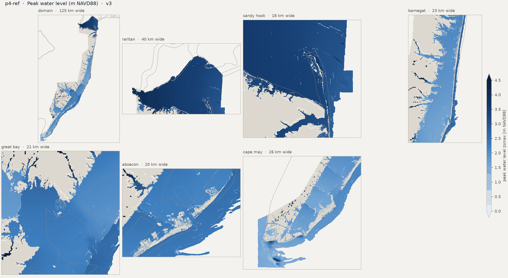
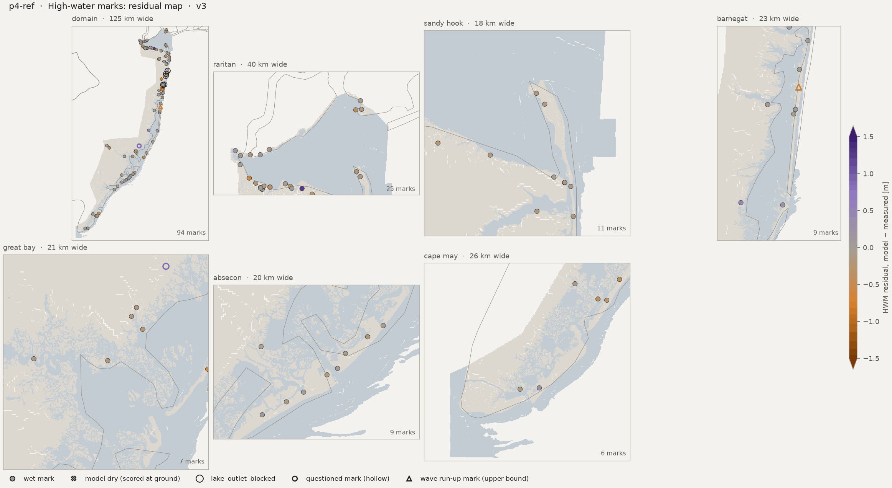
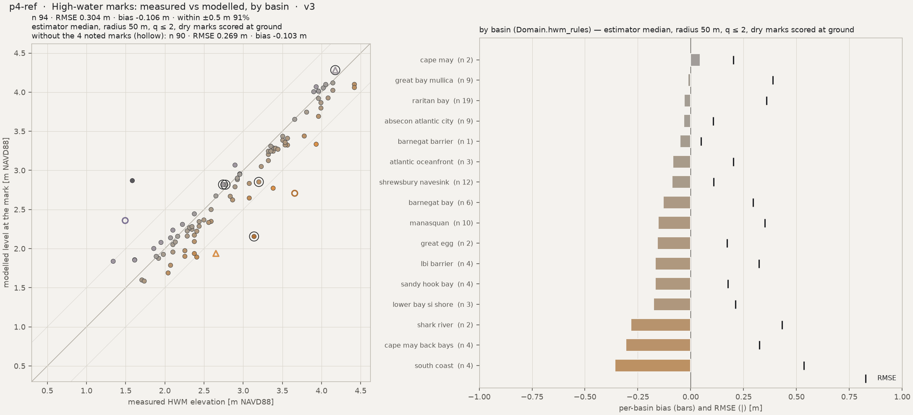
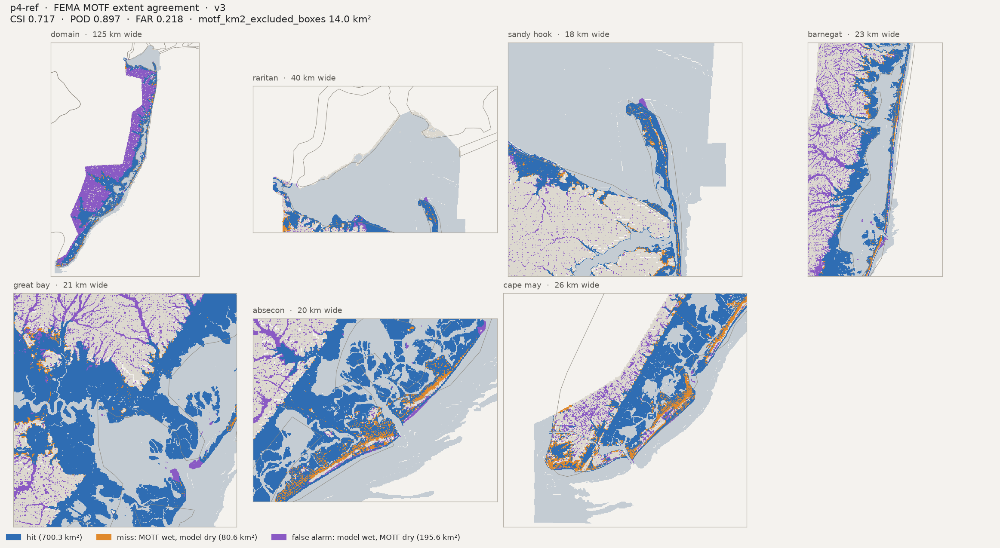
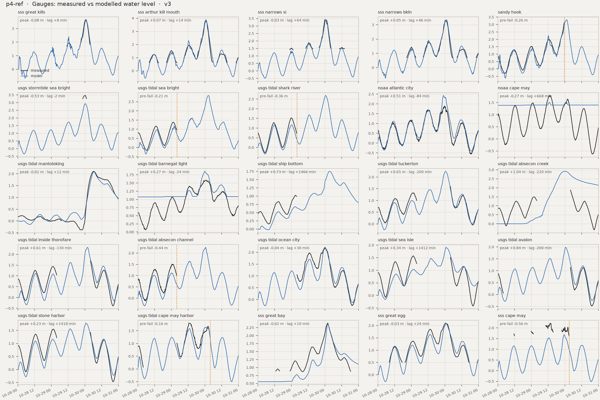
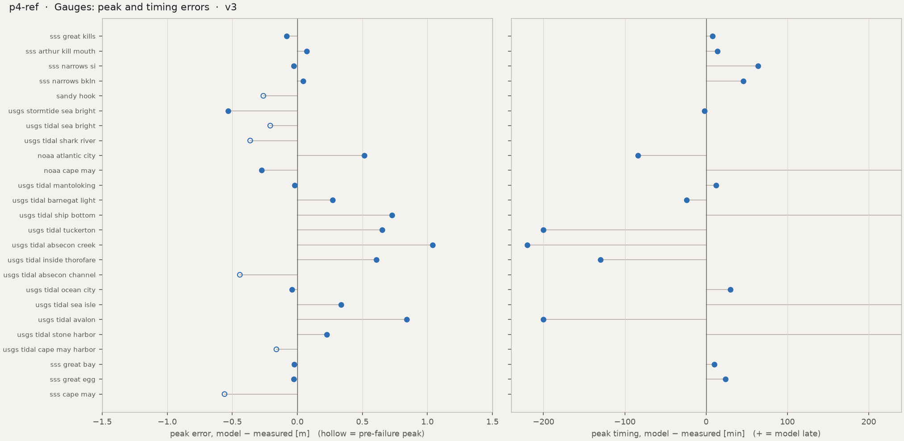
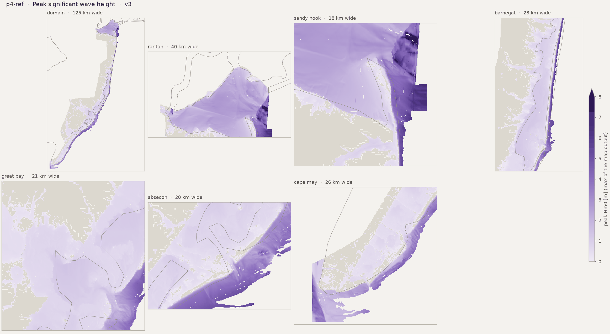

Run card, flags and the standard figure set. HWM numbers: estimator median, radius 50 m. Compare with p4-ref
Preliminary research diagnostics — not peer-reviewed results.
HWM: estimator median, radius 50 m, q ≤ 2, dry marks scored at ground (the _scored keys). CSI / POD / FAR on sheet-valid land; km² excl. = motf_km2_excluded_boxes.







| peak_zb_sss_great_kills_m | -1.955272197723389 |
| peak_obs_sss_great_kills_m | 3.650640566666667 |
| peak_obs_time_sss_great_kills | 2012-10-30T00:42 |
| peak_mod_full_sss_great_kills_m | 3.568340539932251 |
| peak_mod_full_time_sss_great_kills | 2012-10-30T00:50 |
| peak_err_sss_great_kills_m | -0.082300026734416 |
| peak_lag_sss_great_kills_min | 8.0 |
| peak_zb_sss_arthur_kill_mouth_m | -1.063024401664734 |
| peak_obs_sss_arthur_kill_mouth_m | 3.8134290000000006 |
| peak_obs_time_sss_arthur_kill_mouth | 2012-10-30T00:36 |
| peak_mod_full_sss_arthur_kill_mouth_m | 3.8869588375091553 |
| peak_mod_full_time_sss_arthur_kill_mouth | 2012-10-30T00:50 |
| peak_err_sss_arthur_kill_mouth_m | 0.0735298375091546 |
| peak_lag_sss_arthur_kill_mouth_min | 14.0 |
| peak_zb_sss_narrows_si_m | -1.4567134380340576 |
| peak_obs_sss_narrows_si_m | 3.4239073 |
| peak_obs_time_sss_narrows_si | 2012-10-30T00:06 |
| peak_mod_full_sss_narrows_si_m | 3.395371913909912 |
| peak_mod_full_time_sss_narrows_si | 2012-10-30T01:10 |
| peak_err_sss_narrows_si_m | -0.0285353860900881 |
| peak_lag_sss_narrows_si_min | 64.0 |
| peak_zb_sss_narrows_bkln_m | -3.102429151535034 |
| peak_obs_sss_narrows_bkln_m | 3.315567833333333 |
| peak_obs_time_sss_narrows_bkln | 2012-10-30T00:24 |
| peak_mod_full_sss_narrows_bkln_m | 3.361131191253662 |
| peak_mod_full_time_sss_narrows_bkln | 2012-10-30T01:10 |
| peak_err_sss_narrows_bkln_m | 0.0455633579203289 |
| peak_lag_sss_narrows_bkln_min | 46.0 |
| peak_zb_sandy_hook_m | -4.232899188995361 |
| peak_obs_sandy_hook_m | 3.175 |
| peak_obs_time_sandy_hook | 2012-10-29T23:36 |
| peak_mod_full_sandy_hook_m | 3.327993392944336 |
| peak_mod_full_time_sandy_hook | 2012-10-30T01:20 |
| peak_mod_prefail_sandy_hook_m | 2.9142234325408936 |
| peak_err_prefail_sandy_hook_m | -0.2607765674591062 |
| peak_record_ends_sandy_hook | 2012-10-29 23:36 |
| peak_zb_usgs_stormtide_sea_bright_m | -1.7469388246536257 |
| peak_obs_usgs_stormtide_sea_bright_m | 3.4651196864959743 |
| peak_obs_time_usgs_stormtide_sea_bright | 2012-10-30T00:12 |
| peak_mod_full_usgs_stormtide_sea_bright_m | 2.9325320720672607 |
| peak_mod_full_time_usgs_stormtide_sea_bright | 2012-10-30T00:10 |
| peak_err_usgs_stormtide_sea_bright_m | -0.5325876144287136 |
| peak_lag_usgs_stormtide_sea_bright_min | -2.0 |
| peak_zb_usgs_tidal_sea_bright_m | -4.3453803062438965 |
| peak_obs_usgs_tidal_sea_bright_m | 1.383792 |
| peak_obs_time_usgs_tidal_sea_bright | 2012-10-29T01:12 |
| peak_mod_full_usgs_tidal_sea_bright_m | 2.840071678161621 |
| peak_mod_full_time_usgs_tidal_sea_bright | 2012-10-30T02:30 |
| peak_mod_prefail_usgs_tidal_sea_bright_m | 1.1759755611419678 |
| peak_err_prefail_usgs_tidal_sea_bright_m | -0.2078164388580323 |
| peak_record_ends_usgs_tidal_sea_bright | 2012-10-29 04:00 |
| peak_zb_usgs_tidal_shark_river_m | -4.118553638458252 |
| peak_obs_usgs_tidal_shark_river_m | 1.527048 |
| peak_obs_time_usgs_tidal_shark_river | 2012-10-29T00:00 |
| peak_mod_full_usgs_tidal_shark_river_m | 2.6856849193573 |
| peak_mod_full_time_usgs_tidal_shark_river | 2012-10-30T00:30 |
| peak_mod_prefail_usgs_tidal_shark_river_m | 1.1680854558944702 |
| peak_err_prefail_usgs_tidal_shark_river_m | -0.3620105441055297 |
| peak_record_ends_usgs_tidal_shark_river | 2012-10-29 04:00 |
| peak_zb_noaa_atlantic_city_m | -7.114473819732666 |
| peak_obs_noaa_atlantic_city_m | 1.915 |
| peak_obs_time_noaa_atlantic_city | 2012-10-30T00:24 |
| peak_mod_full_noaa_atlantic_city_m | 2.4291131496429443 |
| peak_mod_full_time_noaa_atlantic_city | 2012-10-29T23:00 |
| peak_err_noaa_atlantic_city_m | 0.5141131496429443 |
| peak_lag_noaa_atlantic_city_min | -84.0 |
| peak_zb_noaa_cape_may_m | 1.3890953063964844 |
| peak_obs_noaa_cape_may_m | 1.798 |
| peak_obs_time_noaa_cape_may | 2012-10-29T13:42 |
| peak_mod_full_noaa_cape_may_m | 1.5236281156539917 |
| peak_mod_full_time_noaa_cape_may | 2012-10-30T00:50 |
| peak_err_noaa_cape_may_m | -0.2743718843460083 |
| peak_lag_noaa_cape_may_min | 668.0 |
| peak_zb_usgs_tidal_mantoloking_m | -2.429171085357666 |
| peak_obs_usgs_tidal_mantoloking_m | 2.1061680000000003 |
| peak_obs_time_usgs_tidal_mantoloking | 2012-10-30T06:18 |
| peak_mod_full_usgs_tidal_mantoloking_m | 2.085258960723877 |
| peak_mod_full_time_usgs_tidal_mantoloking | 2012-10-30T06:30 |
| peak_err_usgs_tidal_mantoloking_m | -0.0209090392761233 |
| peak_lag_usgs_tidal_mantoloking_min | 12.0 |
| peak_zb_usgs_tidal_barnegat_light_m | 1.0739723443984983 |
| peak_obs_usgs_tidal_barnegat_light_m | 1.588008 |
| peak_obs_time_usgs_tidal_barnegat_light | 2012-10-30T00:24 |
| peak_mod_full_usgs_tidal_barnegat_light_m | 1.8580482006073 |
| peak_mod_full_time_usgs_tidal_barnegat_light | 2012-10-30T00:00 |
| peak_err_usgs_tidal_barnegat_light_m | 0.2700402006072997 |
| peak_lag_usgs_tidal_barnegat_light_min | -24.0 |
| peak_zb_usgs_tidal_ship_bottom_m | -4.615384578704834 |
| peak_obs_usgs_tidal_ship_bottom_m | 1.024128 |
| peak_obs_time_usgs_tidal_ship_bottom | 2012-10-29T02:54 |
| peak_mod_full_usgs_tidal_ship_bottom_m | 1.7530977725982666 |
| peak_mod_full_time_usgs_tidal_ship_bottom | 2012-10-30T03:20 |
| peak_err_usgs_tidal_ship_bottom_m | 0.7289697725982667 |
| peak_lag_usgs_tidal_ship_bottom_min | 1466.0 |
| peak_zb_usgs_tidal_tuckerton_m | -1.9723796844482424 |
| peak_obs_usgs_tidal_tuckerton_m | 1.591056 |
| peak_obs_time_usgs_tidal_tuckerton | 2012-10-30T04:00 |
| peak_mod_full_usgs_tidal_tuckerton_m | 2.241811990737915 |
| peak_mod_full_time_usgs_tidal_tuckerton | 2012-10-30T00:40 |
| peak_err_usgs_tidal_tuckerton_m | 0.650755990737915 |
| peak_lag_usgs_tidal_tuckerton_min | -200.0 |
| peak_zb_usgs_tidal_absecon_creek_m | 2.4660839699208736e-06 |
| peak_obs_usgs_tidal_absecon_creek_m | 1.87452 |
| peak_obs_time_usgs_tidal_absecon_creek | 2012-10-30T04:00 |
| peak_mod_full_usgs_tidal_absecon_creek_m | 2.913435459136963 |
| peak_mod_full_time_usgs_tidal_absecon_creek | 2012-10-30T00:20 |
| peak_err_usgs_tidal_absecon_creek_m | 1.0389154591369627 |
| peak_lag_usgs_tidal_absecon_creek_min | -220.0 |
| peak_zb_usgs_tidal_inside_thorofare_m | -5.44306755065918 |
| peak_obs_usgs_tidal_inside_thorofare_m | 1.712976 |
| peak_obs_time_usgs_tidal_inside_thorofare | 2012-10-30T04:00 |
| peak_mod_full_usgs_tidal_inside_thorofare_m | 2.3206005096435547 |
| peak_mod_full_time_usgs_tidal_inside_thorofare | 2012-10-30T01:50 |
| peak_err_usgs_tidal_inside_thorofare_m | 0.6076245096435546 |
| peak_lag_usgs_tidal_inside_thorofare_min | -130.0 |
| peak_zb_usgs_tidal_absecon_channel_m | -2.4803500175476074 |
| peak_obs_usgs_tidal_absecon_channel_m | 1.5575280000000002 |
| peak_obs_time_usgs_tidal_absecon_channel | 2012-10-29T01:06 |
| peak_mod_full_usgs_tidal_absecon_channel_m | 2.2541699409484863 |
| peak_mod_full_time_usgs_tidal_absecon_channel | 2012-10-30T00:40 |
| peak_mod_prefail_usgs_tidal_absecon_channel_m | 1.1159934997558594 |
| peak_err_prefail_usgs_tidal_absecon_channel_m | -0.4415345002441408 |
| peak_record_ends_usgs_tidal_absecon_channel | 2012-10-29 03:54 |
| peak_zb_usgs_tidal_ocean_city_m | -3.884687662124634 |
| peak_obs_usgs_tidal_ocean_city_m | 2.2098 |
| peak_obs_time_usgs_tidal_ocean_city | 2012-10-30T00:00 |
| peak_mod_full_usgs_tidal_ocean_city_m | 2.1677138805389404 |
| peak_mod_full_time_usgs_tidal_ocean_city | 2012-10-30T00:30 |
| peak_err_usgs_tidal_ocean_city_m | -0.0420861194610595 |
| peak_lag_usgs_tidal_ocean_city_min | 30.0 |
| peak_zb_usgs_tidal_sea_isle_m | -1.7042393684387207 |
| peak_obs_usgs_tidal_sea_isle_m | 1.575816 |
| peak_obs_time_usgs_tidal_sea_isle | 2012-10-29T01:18 |
| peak_mod_full_usgs_tidal_sea_isle_m | 1.9114160537719729 |
| peak_mod_full_time_usgs_tidal_sea_isle | 2012-10-30T00:50 |
| peak_err_usgs_tidal_sea_isle_m | 0.3356000537719725 |
| peak_lag_usgs_tidal_sea_isle_min | 1412.0 |
| peak_zb_usgs_tidal_avalon_m | -5.937126636505127 |
| peak_obs_usgs_tidal_avalon_m | 1.139952 |
| peak_obs_time_usgs_tidal_avalon | 2012-10-30T04:00 |
| peak_mod_full_usgs_tidal_avalon_m | 1.982492566108704 |
| peak_mod_full_time_usgs_tidal_avalon | 2012-10-30T00:40 |
| peak_err_usgs_tidal_avalon_m | 0.8425405661087035 |
| peak_lag_usgs_tidal_avalon_min | -200.0 |
| peak_zb_usgs_tidal_stone_harbor_m | -6.791902542114258 |
| peak_obs_usgs_tidal_stone_harbor_m | 1.551432 |
| peak_obs_time_usgs_tidal_stone_harbor | 2012-10-29T01:12 |
| peak_mod_full_usgs_tidal_stone_harbor_m | 1.778792381286621 |
| peak_mod_full_time_usgs_tidal_stone_harbor | 2012-10-30T00:50 |
| peak_err_usgs_tidal_stone_harbor_m | 0.2273603812866209 |
| peak_lag_usgs_tidal_stone_harbor_min | 1418.0 |
| peak_zb_usgs_tidal_cape_may_harbor_m | -1.3016067743301392 |
| peak_obs_usgs_tidal_cape_may_harbor_m | 1.79832 |
| peak_obs_time_usgs_tidal_cape_may_harbor | 2012-10-29T12:42 |
| peak_mod_full_usgs_tidal_cape_may_harbor_m | 1.6376630067825315 |
| peak_mod_full_time_usgs_tidal_cape_may_harbor | 2012-10-30T01:10 |
| peak_mod_prefail_usgs_tidal_cape_may_harbor_m | 1.6376630067825315 |
| peak_err_prefail_usgs_tidal_cape_may_harbor_m | -0.1606569932174684 |
| peak_record_ends_usgs_tidal_cape_may_harbor | 2012-10-30 03:54 |
| peak_zb_sss_great_bay_m | 0.5555722713470459 |
| peak_obs_sss_great_bay_m | 2.389551566666667 |
| peak_obs_time_sss_great_bay | 2012-10-30T02:00 |
| peak_mod_full_sss_great_bay_m | 2.366128921508789 |
| peak_mod_full_time_sss_great_bay | 2012-10-30T02:10 |
| peak_err_sss_great_bay_m | -0.0234226451578778 |
| peak_lag_sss_great_bay_min | 10.0 |
| peak_zb_sss_great_egg_m | -1.4922324419021606 |
| peak_obs_sss_great_egg_m | 2.098467566666667 |
| peak_obs_time_sss_great_egg | 2012-10-30T00:36 |
| peak_mod_full_sss_great_egg_m | 2.072904825210572 |
| peak_mod_full_time_sss_great_egg | 2012-10-30T01:00 |
| peak_err_sss_great_egg_m | -0.0255627414560954 |
| peak_lag_sss_great_egg_min | 24.0 |
| peak_zb_sss_cape_may_m | -7.165440559387207 |
| peak_obs_sss_cape_may_m | 2.24273711641651 |
| peak_obs_time_sss_cape_may | 2012-10-29T13:48 |
| peak_mod_full_sss_cape_may_m | 1.6834521293640137 |
| peak_mod_full_time_sss_cape_may | 2012-10-29T23:30 |
| peak_mod_prefail_sss_cape_may_m | 1.6834521293640137 |
| peak_err_prefail_sss_cape_may_m | -0.559284987052497 |
| peak_record_ends_sss_cape_may | 2012-10-30 03:12 |
| tide_obs_range_sss_great_kills_m | 0.204 |
| tide_mod_range_sss_great_kills_m | 2.04 |
| tide_mod_drift_sss_great_kills_m | 1.006 |
| tide_mod_frac_rising_sss_great_kills | 0.56 |
| tide_mod_is_tidal_sss_great_kills | True |
| tide_range_damping_sss_great_kills_m | -1.836 |
| phase_lag_sss_great_kills_min | |
| tide_obs_range_sss_arthur_kill_mouth_m | 1.309 |
| tide_mod_range_sss_arthur_kill_mouth_m | 1.867 |
| tide_mod_drift_sss_arthur_kill_mouth_m | 0.835 |
| tide_mod_frac_rising_sss_arthur_kill_mouth | 0.542 |
| tide_mod_is_tidal_sss_arthur_kill_mouth | True |
| tide_range_damping_sss_arthur_kill_mouth_m | -0.558 |
| phase_lag_sss_arthur_kill_mouth_min | 11.7 |
| tide_obs_range_sss_narrows_si_m | 0.407 |
| tide_mod_range_sss_narrows_si_m | 1.686 |
| tide_mod_drift_sss_narrows_si_m | 0.554 |
| tide_mod_frac_rising_sss_narrows_si | 0.543 |
| tide_mod_is_tidal_sss_narrows_si | True |
| tide_range_damping_sss_narrows_si_m | -1.28 |
| phase_lag_sss_narrows_si_min | -40.7 |
| tide_obs_range_sss_narrows_bkln_m | 1.035 |
| tide_mod_range_sss_narrows_bkln_m | 1.787 |
| tide_mod_drift_sss_narrows_bkln_m | 0.578 |
| tide_mod_frac_rising_sss_narrows_bkln | 0.54 |
| tide_mod_is_tidal_sss_narrows_bkln | True |
| tide_range_damping_sss_narrows_bkln_m | -0.752 |
| phase_lag_sss_narrows_bkln_min | -120.0 |
| tide_obs_range_sandy_hook_m | 2.036 |
| tide_mod_range_sandy_hook_m | 1.926 |
| tide_mod_drift_sandy_hook_m | 0.963 |
| tide_mod_frac_rising_sandy_hook | 0.577 |
| tide_mod_is_tidal_sandy_hook | True |
| tide_range_damping_sandy_hook_m | 0.11 |
| phase_lag_sandy_hook_min | 2.3 |
| tide_obs_range_usgs_stormtide_sea_bright_m | |
| tide_mod_range_usgs_stormtide_sea_bright_m | 1.445 |
| tide_mod_drift_usgs_stormtide_sea_bright_m | 0.581 |
| tide_mod_frac_rising_usgs_stormtide_sea_bright | 0.563 |
| tide_mod_is_tidal_usgs_stormtide_sea_bright | True |
| tide_range_damping_usgs_stormtide_sea_bright_m | |
| phase_lag_usgs_stormtide_sea_bright_min | |
| tide_obs_range_usgs_tidal_sea_bright_m | 1.283 |
| tide_mod_range_usgs_tidal_sea_bright_m | 1.135 |
| tide_mod_drift_usgs_tidal_sea_bright_m | 0.446 |
| tide_mod_frac_rising_usgs_tidal_sea_bright | 0.579 |
| tide_mod_is_tidal_usgs_tidal_sea_bright | True |
| tide_range_damping_usgs_tidal_sea_bright_m | 0.148 |
| phase_lag_usgs_tidal_sea_bright_min | 22.1 |
| tide_obs_range_usgs_tidal_shark_river_m | 1.539 |
| tide_mod_range_usgs_tidal_shark_river_m | 1.403 |
| tide_mod_drift_usgs_tidal_shark_river_m | 0.446 |
| tide_mod_frac_rising_usgs_tidal_shark_river | 0.518 |
| tide_mod_is_tidal_usgs_tidal_shark_river | True |
| tide_range_damping_usgs_tidal_shark_river_m | 0.137 |
| phase_lag_usgs_tidal_shark_river_min | 8.1 |
| tide_obs_range_noaa_atlantic_city_m | 1.848 |
| tide_mod_range_noaa_atlantic_city_m | 1.39 |
| tide_mod_drift_noaa_atlantic_city_m | 0.607 |
| tide_mod_frac_rising_noaa_atlantic_city | 0.522 |
| tide_mod_is_tidal_noaa_atlantic_city | True |
| tide_range_damping_noaa_atlantic_city_m | 0.458 |
| phase_lag_noaa_atlantic_city_min | 7.6 |
| tide_obs_range_noaa_cape_may_m | 1.585 |
| tide_mod_range_noaa_cape_may_m | 0.04 |
| tide_mod_drift_noaa_cape_may_m | 0.05 |
| tide_mod_frac_rising_noaa_cape_may | 1.0 |
| tide_mod_is_tidal_noaa_cape_may | True |
| tide_range_damping_noaa_cape_may_m | 1.545 |
| phase_lag_noaa_cape_may_min | -120.0 |
| tide_obs_range_usgs_tidal_mantoloking_m | 0.238 |
| tide_mod_range_usgs_tidal_mantoloking_m | 0.301 |
| tide_mod_drift_usgs_tidal_mantoloking_m | 0.072 |
| tide_mod_frac_rising_usgs_tidal_mantoloking | 0.483 |
| tide_mod_is_tidal_usgs_tidal_mantoloking | True |
| tide_range_damping_usgs_tidal_mantoloking_m | -0.064 |
| phase_lag_usgs_tidal_mantoloking_min | -58.9 |
| tide_obs_range_usgs_tidal_barnegat_light_m | 1.003 |
| tide_mod_range_usgs_tidal_barnegat_light_m | 0.162 |
| tide_mod_drift_usgs_tidal_barnegat_light_m | 0.179 |
| tide_mod_frac_rising_usgs_tidal_barnegat_light | 0.889 |
| tide_mod_is_tidal_usgs_tidal_barnegat_light | True |
| tide_range_damping_usgs_tidal_barnegat_light_m | 0.841 |
| phase_lag_usgs_tidal_barnegat_light_min | 0.7 |
| tide_obs_range_usgs_tidal_ship_bottom_m | 0.579 |
| tide_mod_range_usgs_tidal_ship_bottom_m | 0.324 |
| tide_mod_drift_usgs_tidal_ship_bottom_m | 0.479 |
| tide_mod_frac_rising_usgs_tidal_ship_bottom | 0.651 |
| tide_mod_is_tidal_usgs_tidal_ship_bottom | True |
| tide_range_damping_usgs_tidal_ship_bottom_m | 0.255 |
| phase_lag_usgs_tidal_ship_bottom_min | 5.4 |
| tide_obs_range_usgs_tidal_tuckerton_m | 0.927 |
| tide_mod_range_usgs_tidal_tuckerton_m | 1.022 |
| tide_mod_drift_usgs_tidal_tuckerton_m | 0.482 |
| tide_mod_frac_rising_usgs_tidal_tuckerton | 0.541 |
| tide_mod_is_tidal_usgs_tidal_tuckerton | True |
| tide_range_damping_usgs_tidal_tuckerton_m | -0.095 |
| phase_lag_usgs_tidal_tuckerton_min | -27.7 |
| tide_obs_range_usgs_tidal_absecon_creek_m | 1.183 |
| tide_mod_range_usgs_tidal_absecon_creek_m | 0.733 |
| tide_mod_drift_usgs_tidal_absecon_creek_m | 1.368 |
| tide_mod_frac_rising_usgs_tidal_absecon_creek | 0.944 |
| tide_mod_is_tidal_usgs_tidal_absecon_creek | True |
| tide_range_damping_usgs_tidal_absecon_creek_m | 0.449 |
| phase_lag_usgs_tidal_absecon_creek_min | 37.9 |
| tide_obs_range_usgs_tidal_inside_thorofare_m | 1.222 |
| tide_mod_range_usgs_tidal_inside_thorofare_m | 1.412 |
| tide_mod_drift_usgs_tidal_inside_thorofare_m | 0.305 |
| tide_mod_frac_rising_usgs_tidal_inside_thorofare | 0.496 |
| tide_mod_is_tidal_usgs_tidal_inside_thorofare | True |
| tide_range_damping_usgs_tidal_inside_thorofare_m | -0.19 |
| phase_lag_usgs_tidal_inside_thorofare_min | 11.6 |
| tide_obs_range_usgs_tidal_absecon_channel_m | 1.341 |
| tide_mod_range_usgs_tidal_absecon_channel_m | 1.221 |
| tide_mod_drift_usgs_tidal_absecon_channel_m | 0.538 |
| tide_mod_frac_rising_usgs_tidal_absecon_channel | 0.533 |
| tide_mod_is_tidal_usgs_tidal_absecon_channel | True |
| tide_range_damping_usgs_tidal_absecon_channel_m | 0.12 |
| phase_lag_usgs_tidal_absecon_channel_min | -32.7 |
| tide_obs_range_usgs_tidal_ocean_city_m | 1.134 |
| tide_mod_range_usgs_tidal_ocean_city_m | 1.267 |
| tide_mod_drift_usgs_tidal_ocean_city_m | 0.491 |
| tide_mod_frac_rising_usgs_tidal_ocean_city | 0.5 |
| tide_mod_is_tidal_usgs_tidal_ocean_city | True |
| tide_range_damping_usgs_tidal_ocean_city_m | -0.133 |
| phase_lag_usgs_tidal_ocean_city_min | 65.3 |
| tide_obs_range_usgs_tidal_sea_isle_m | 1.207 |
| tide_mod_range_usgs_tidal_sea_isle_m | 0.599 |
| tide_mod_drift_usgs_tidal_sea_isle_m | 0.439 |
| tide_mod_frac_rising_usgs_tidal_sea_isle | 0.562 |
| tide_mod_is_tidal_usgs_tidal_sea_isle | True |
| tide_range_damping_usgs_tidal_sea_isle_m | 0.608 |
| phase_lag_usgs_tidal_sea_isle_min | 3.1 |
| tide_obs_range_usgs_tidal_avalon_m | |
| tide_mod_range_usgs_tidal_avalon_m | 1.169 |
| tide_mod_drift_usgs_tidal_avalon_m | 0.323 |
| tide_mod_frac_rising_usgs_tidal_avalon | 0.533 |
| tide_mod_is_tidal_usgs_tidal_avalon | True |
| tide_range_damping_usgs_tidal_avalon_m | |
| phase_lag_usgs_tidal_avalon_min | |
| tide_obs_range_usgs_tidal_stone_harbor_m | 1.21 |
| tide_mod_range_usgs_tidal_stone_harbor_m | 1.128 |
| tide_mod_drift_usgs_tidal_stone_harbor_m | 0.335 |
| tide_mod_frac_rising_usgs_tidal_stone_harbor | 0.489 |
| tide_mod_is_tidal_usgs_tidal_stone_harbor | True |
| tide_range_damping_usgs_tidal_stone_harbor_m | 0.082 |
| phase_lag_usgs_tidal_stone_harbor_min | -8.0 |
| tide_obs_range_usgs_tidal_cape_may_harbor_m | 1.186 |
| tide_mod_range_usgs_tidal_cape_may_harbor_m | 1.393 |
| tide_mod_drift_usgs_tidal_cape_may_harbor_m | 0.309 |
| tide_mod_frac_rising_usgs_tidal_cape_may_harbor | 0.518 |
| tide_mod_is_tidal_usgs_tidal_cape_may_harbor | True |
| tide_range_damping_usgs_tidal_cape_may_harbor_m | -0.208 |
| phase_lag_usgs_tidal_cape_may_harbor_min | 49.4 |
| tide_obs_range_sss_great_bay_m | 0.401 |
| tide_mod_range_sss_great_bay_m | 0.188 |
| tide_mod_drift_sss_great_bay_m | 0.255 |
| tide_mod_frac_rising_sss_great_bay | 0.667 |
| tide_mod_is_tidal_sss_great_bay | True |
| tide_range_damping_sss_great_bay_m | 0.213 |
| phase_lag_sss_great_bay_min | 93.9 |
| tide_obs_range_sss_great_egg_m | 1.225 |
| tide_mod_range_sss_great_egg_m | 1.217 |
| tide_mod_drift_sss_great_egg_m | 0.387 |
| tide_mod_frac_rising_sss_great_egg | 0.496 |
| tide_mod_is_tidal_sss_great_egg | True |
| tide_range_damping_sss_great_egg_m | 0.008 |
| phase_lag_sss_great_egg_min | -10.4 |
| tide_obs_range_sss_cape_may_m | 0.401 |
| tide_mod_range_sss_cape_may_m | 1.378 |
| tide_mod_drift_sss_cape_may_m | 0.39 |
| tide_mod_frac_rising_sss_cape_may | 0.525 |
| tide_mod_is_tidal_sss_cape_may | True |
| tide_range_damping_sss_cape_may_m | -0.977 |
| phase_lag_sss_cape_may_min | -4.2 |
| hwm_estimator | median |
| hwm_radius_m | 50.0 |
| hwm_n_scored | 94 |
| hwm_n_dry_scored | 0 |
| hwm_rmse_scored_m | 0.3038077347880432 |
| hwm_bias_scored_m | -0.1063808004399563 |
| hwm_within0.5_scored | 0.9148936170212766 |
| hwm_n_wet | 138 |
| hwm_n_dry | 2 |
| hwm_rmse_m | 0.3038077347880432 |
| hwm_bias_m | -0.1063808004399563 |
| hwm_within0.5 | 0.9148936170212766 |
| hwm_n_delaware_bay_shore | 0 |
| hwm_bias_delaware_bay_shore_m | |
| hwm_rmse_delaware_bay_shore_m | |
| hwm_n_scored_delaware_bay_shore | 0 |
| hwm_n_dry_delaware_bay_shore | 0 |
| hwm_bias_scored_delaware_bay_shore_m | |
| hwm_rmse_scored_delaware_bay_shore_m | |
| hwm_n_cape_may | 2 |
| hwm_bias_cape_may_m | 0.0451104631423949 |
| hwm_rmse_cape_may_m | 0.2024338156061806 |
| hwm_n_scored_cape_may | 2 |
| hwm_n_dry_cape_may | 0 |
| hwm_bias_scored_cape_may_m | 0.0451104631423949 |
| hwm_rmse_scored_cape_may_m | 0.2024338156061806 |
| hwm_n_cape_may_back_bays | 4 |
| hwm_bias_cape_may_back_bays_m | -0.306226246356964 |
| hwm_rmse_cape_may_back_bays_m | 0.3244482876796584 |
| hwm_n_scored_cape_may_back_bays | 4 |
| hwm_n_dry_cape_may_back_bays | 0 |
| hwm_bias_scored_cape_may_back_bays_m | -0.306226246356964 |
| hwm_rmse_scored_cape_may_back_bays_m | 0.3244482876796584 |
| hwm_n_great_egg | 2 |
| hwm_bias_great_egg_m | -0.1583598737716676 |
| hwm_rmse_great_egg_m | 0.1720065245430209 |
| hwm_n_scored_great_egg | 2 |
| hwm_n_dry_great_egg | 0 |
| hwm_bias_scored_great_egg_m | -0.1583598737716676 |
| hwm_rmse_scored_great_egg_m | 0.1720065245430209 |
| hwm_n_absecon_atlantic_city | 9 |
| hwm_bias_absecon_atlantic_city_m | -0.0318010929955376 |
| hwm_rmse_absecon_atlantic_city_m | 0.1056746897118859 |
| hwm_n_scored_absecon_atlantic_city | 9 |
| hwm_n_dry_absecon_atlantic_city | 0 |
| hwm_bias_scored_absecon_atlantic_city_m | -0.0318010929955376 |
| hwm_rmse_scored_absecon_atlantic_city_m | 0.1056746897118859 |
| hwm_n_lbi_barrier | 4 |
| hwm_bias_lbi_barrier_m | -0.1668251004219054 |
| hwm_rmse_lbi_barrier_m | 0.3220218554510644 |
| hwm_n_scored_lbi_barrier | 4 |
| hwm_n_dry_lbi_barrier | 0 |
| hwm_bias_scored_lbi_barrier_m | -0.1668251004219054 |
| hwm_rmse_scored_lbi_barrier_m | 0.3220218554510644 |
| hwm_n_great_bay_mullica | 9 |
| hwm_bias_great_bay_mullica_m | -0.0130126677619086 |
| hwm_rmse_great_bay_mullica_m | 0.3877688858984899 |
| hwm_n_scored_great_bay_mullica | 9 |
| hwm_n_dry_great_bay_mullica | 0 |
| hwm_bias_scored_great_bay_mullica_m | -0.0130126677619086 |
| hwm_rmse_scored_great_bay_mullica_m | 0.3877688858984899 |
| hwm_n_manasquan | 10 |
| hwm_bias_manasquan_m | -0.1545044523239135 |
| hwm_rmse_manasquan_m | 0.3504565277893341 |
| hwm_n_scored_manasquan | 10 |
| hwm_n_dry_manasquan | 0 |
| hwm_bias_scored_manasquan_m | -0.1545044523239135 |
| hwm_rmse_scored_manasquan_m | 0.3504565277893341 |
| hwm_n_barnegat_barrier | 1 |
| hwm_bias_barnegat_barrier_m | -0.0495268669128416 |
| hwm_rmse_barnegat_barrier_m | 0.0495268669128416 |
| hwm_n_scored_barnegat_barrier | 1 |
| hwm_n_dry_barnegat_barrier | 0 |
| hwm_bias_scored_barnegat_barrier_m | -0.0495268669128416 |
| hwm_rmse_scored_barnegat_barrier_m | 0.0495268669128416 |
| hwm_n_barnegat_bay | 6 |
| hwm_bias_barnegat_bay_m | -0.1294614615440369 |
| hwm_rmse_barnegat_bay_m | 0.2951658977443449 |
| hwm_n_scored_barnegat_bay | 6 |
| hwm_n_dry_barnegat_bay | 0 |
| hwm_bias_scored_barnegat_bay_m | -0.1294614615440369 |
| hwm_rmse_scored_barnegat_bay_m | 0.2951658977443449 |
| hwm_n_shark_river | 2 |
| hwm_bias_shark_river_m | -0.2834747705459595 |
| hwm_rmse_shark_river_m | 0.4327353915205142 |
| hwm_n_scored_shark_river | 2 |
| hwm_n_dry_shark_river | 0 |
| hwm_bias_scored_shark_river_m | -0.2834747705459595 |
| hwm_rmse_scored_shark_river_m | 0.4327353915205142 |
| hwm_n_south_coast | 4 |
| hwm_bias_south_coast_m | -0.3590009512901306 |
| hwm_rmse_south_coast_m | 0.5347621988650736 |
| hwm_n_scored_south_coast | 4 |
| hwm_n_dry_south_coast | 0 |
| hwm_bias_scored_south_coast_m | -0.3590009512901306 |
| hwm_rmse_scored_south_coast_m | 0.5347621988650736 |
| hwm_n_sandy_hook_bay | 4 |
| hwm_bias_sandy_hook_bay_m | -0.1679190101623534 |
| hwm_rmse_sandy_hook_bay_m | 0.1758551907622392 |
| hwm_n_scored_sandy_hook_bay | 4 |
| hwm_n_dry_sandy_hook_bay | 0 |
| hwm_bias_scored_sandy_hook_bay_m | -0.1679190101623534 |
| hwm_rmse_scored_sandy_hook_bay_m | 0.1758551907622392 |
| hwm_n_raritan_bay | 19 |
| hwm_bias_raritan_bay_m | -0.0309207272780568 |
| hwm_rmse_raritan_bay_m | 0.3592240790392285 |
| hwm_n_scored_raritan_bay | 19 |
| hwm_n_dry_raritan_bay | 0 |
| hwm_bias_scored_raritan_bay_m | -0.0309207272780568 |
| hwm_rmse_scored_raritan_bay_m | 0.3592240790392285 |
| hwm_n_lower_bay_si_shore | 3 |
| hwm_bias_lower_bay_si_shore_m | -0.1763958263397215 |
| hwm_rmse_lower_bay_si_shore_m | 0.2121495763921711 |
| hwm_n_scored_lower_bay_si_shore | 3 |
| hwm_n_dry_lower_bay_si_shore | 0 |
| hwm_bias_scored_lower_bay_si_shore_m | -0.1763958263397215 |
| hwm_rmse_scored_lower_bay_si_shore_m | 0.2121495763921711 |
| hwm_n_atlantic_oceanfront | 3 |
| hwm_bias_atlantic_oceanfront_m | -0.0846997356414793 |
| hwm_rmse_atlantic_oceanfront_m | 0.2019392197205189 |
| hwm_n_scored_atlantic_oceanfront | 3 |
| hwm_n_dry_atlantic_oceanfront | 0 |
| hwm_bias_scored_atlantic_oceanfront_m | -0.0846997356414793 |
| hwm_rmse_scored_atlantic_oceanfront_m | 0.2019392197205189 |
| hwm_n_shrewsbury_navesink | 12 |
| hwm_bias_shrewsbury_navesink_m | -0.0884180946350098 |
| hwm_rmse_shrewsbury_navesink_m | 0.1082797008575603 |
| hwm_n_scored_shrewsbury_navesink | 12 |
| hwm_n_dry_shrewsbury_navesink | 0 |
| hwm_bias_scored_shrewsbury_navesink_m | -0.0884180946350098 |
| hwm_rmse_scored_shrewsbury_navesink_m | 0.1082797008575603 |
| hwm_n_unclassified | 0 |
| hwm_bias_unclassified_m | |
| hwm_rmse_unclassified_m | |
| hwm_n_scored_unclassified | 0 |
| hwm_n_dry_unclassified | 0 |
| hwm_bias_scored_unclassified_m | |
| hwm_rmse_scored_unclassified_m | |
| motf_csi | 0.7171508760933886 |
| motf_pod | 0.8968131524242967 |
| motf_far | 0.2183513879247383 |
| motf_km2_unsimulated | 7817.5233 |
| motf_km2_unsim_motfwet | 181.188675 |
| motf_km2_unsim_modwet | 0.020025 |
| motf_km2_excluded_boxes | 14.037525 |
| motf_km2_fa_connected | 73.61775 |
| motf_km2_fa_disconnected | 121.9959 |
| motf_km2_fa_rainonly | |
| motf_far_connected | 0.0951293007201205 |
| motf_csi_connected | 0.8195446707795306 |
| domain | v3 |
| extent_admissible | True |
| engine | bin:v2.3.3-winddir-igk-igseed-wmseed-1-gf11@e15ed916 |
| snapwave_direction | imposed |
| subgrid | _subgrid_v4fixes@183ce59b |
| retired_to | |
| wind_scale | replaced:naccs_blend |
| sea_level_offset | none |
| motf_km2_excluded_invalid | 0.0 |
| obs_offset_sss_great_kills_m | -0.34 |
| peak_pub_usgs_tidal_sea_bright_m | 2.914 |
| peak_pub_time_usgs_tidal_sea_bright | 2012-10-30 00:54 |
| peak_err_pub_usgs_tidal_sea_bright_m | -0.073928321838379 |
| peak_lag_pub_usgs_tidal_sea_bright_min | 96.0 |
| peak_pub_usgs_tidal_shark_river_m | 3.335 |
| peak_pub_time_usgs_tidal_shark_river | 2012-10-29 23:18 |
| peak_err_pub_usgs_tidal_shark_river_m | -0.6493150806427002 |
| peak_lag_pub_usgs_tidal_shark_river_min | 72.0 |
| peak_pub_usgs_tidal_ship_bottom_m | 1.966 |
| peak_pub_time_usgs_tidal_ship_bottom | 2012-10-30 03:00 |
| peak_err_pub_usgs_tidal_ship_bottom_m | -0.2129022274017333 |
| peak_lag_pub_usgs_tidal_ship_bottom_min | 20.0 |
| peak_pub_usgs_tidal_tuckerton_m | 2.53 |
| peak_pub_time_usgs_tidal_tuckerton | 2012-10-29 23:48 |
| peak_err_pub_usgs_tidal_tuckerton_m | -0.2881880092620847 |
| peak_lag_pub_usgs_tidal_tuckerton_min | 52.0 |
| peak_pub_usgs_tidal_absecon_creek_m | 2.295 |
| peak_pub_time_usgs_tidal_absecon_creek | 2012-10-30 01:06 |
| peak_err_pub_usgs_tidal_absecon_creek_m | 0.618435459136963 |
| peak_lag_pub_usgs_tidal_absecon_creek_min | -46.0 |
| peak_pub_usgs_tidal_inside_thorofare_m | 2.323 |
| peak_pub_time_usgs_tidal_inside_thorofare | 2012-10-30 01:42 |
| peak_err_pub_usgs_tidal_inside_thorofare_m | -0.0023994903564452 |
| peak_lag_pub_usgs_tidal_inside_thorofare_min | 8.0 |
| peak_pub_usgs_tidal_absecon_channel_m | 2.38 |
| peak_pub_time_usgs_tidal_absecon_channel | 2012-10-30 00:54 |
| peak_err_pub_usgs_tidal_absecon_channel_m | -0.1258300590515135 |
| peak_lag_pub_usgs_tidal_absecon_channel_min | -14.0 |
| peak_pub_usgs_tidal_sea_isle_m | 2.304 |
| peak_pub_time_usgs_tidal_sea_isle | 2012-10-30 00:18 |
| peak_err_pub_usgs_tidal_sea_isle_m | -0.3925839462280271 |
| peak_lag_pub_usgs_tidal_sea_isle_min | 32.0 |
| peak_pub_usgs_tidal_avalon_m | 2.179 |
| peak_pub_time_usgs_tidal_avalon | 2012-10-29 23:24 |
| peak_err_pub_usgs_tidal_avalon_m | -0.1965074338912962 |
| peak_lag_pub_usgs_tidal_avalon_min | 76.0 |
| peak_pub_usgs_tidal_stone_harbor_m | 2.051 |
| peak_pub_time_usgs_tidal_stone_harbor | 2012-10-30 01:36 |
| peak_err_pub_usgs_tidal_stone_harbor_m | -0.272207618713379 |
| peak_lag_pub_usgs_tidal_stone_harbor_min | -46.0 |
| hwm_noted_ids | [6169;6188;6202;6121] |
| hwm_n_scored_excl_noted | 90.0 |
| hwm_n_dry_scored_excl_noted | 0.0 |
| hwm_rmse_scored_excl_noted_m | 0.2688222065919007 |
| hwm_bias_scored_excl_noted_m | -0.1034107586012946 |
| hwm_within0.5_scored_excl_noted | 0.9444444444444444 |
| hwm_lake_flag_rule | F<P<=C;P=median_sea_zsmax_band1000m;window50m |
| hwm_n_lake_outlet_blocked | 5.0 |
| hwm_lake_outlet_blocked_ids | [6122;6124;6129;6130;6121] |
| hwm_n_scored_excl_lake_blocked | 89.0 |
| hwm_n_dry_scored_excl_lake_blocked | 0.0 |
| hwm_rmse_scored_excl_lake_blocked_m | 0.2916261710590615 |
| hwm_bias_scored_excl_lake_blocked_m | -0.0999389965936039 |
| hwm_within0.5_scored_excl_lake_blocked | 0.9213483146067416 |
| meteo | wind:naccs_blend pres:naccs_blend grid:engine |
| infiltration | off |
| engine_seed | fixed |
| extra_discharge | none |